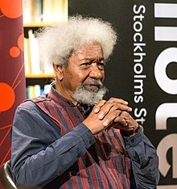

- Wole Soyinka whose real name is Akinwande Oluwole Babatunde Soyinka
- He is a Nigerian playwright, novelist, poet, and essayist in the English language.
- Soyinka was born into a Yoruba family in Abeokuta on the 13 July 1934
- He is the first sub-Saharan African to be honoured with Nobel Prize in Literature in 1986
- He is the first sub-Saharan African to be honoured with Nobel Prize in Literature in 1986